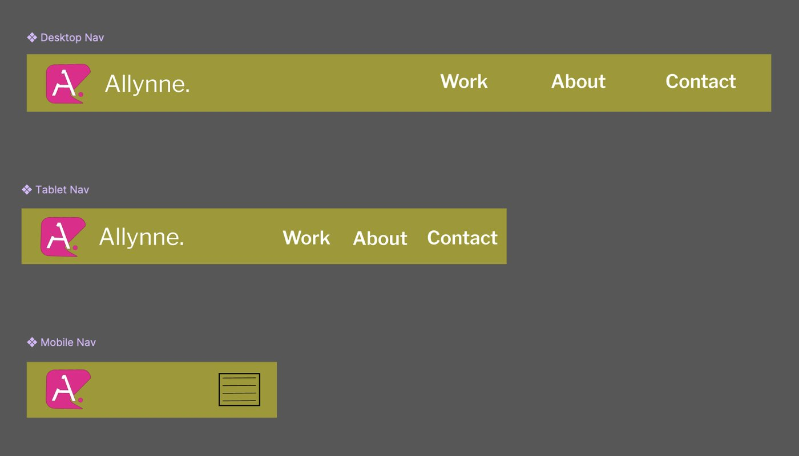

Finity
A personal finance app for young professionals. Four moderated sessions across four task flows, and the finding that only turned up when I stopped reading the satisfaction scores.
Read the case study →
Work
Two graduate team projects where I led the research, one solo evaluation, and a brand identity I designed end to end. Different methods, same habit: start with the people, write down exactly where they get stuck.
A personal finance app for young professionals. Four moderated sessions across four task flows, and the finding that only turned up when I stopped reading the satisfaction scores.
Read the case study →

A solo evaluation of one of the most cluttered storefronts on the web. Sixteen action steps, all of them passing, and three real problems underneath.
Read the case study →

A mobile app that helps patients and caregivers walk into a medical appointment prepared. My graduate capstone: 12 survey responses, a heuristic review, and the usability score that told the truth.
Read the case study →
Design system
My own brand, designed end to end: palette, type, icon set, buttons, navigation and card components, built as a proper kit rather than a one-off logo. The site you are reading now runs on it, with two color values adjusted so the small text clears WCAG AA.



Open the design system in Figma
The brand olive sits at 3.0:1 against white and the magenta at 4.2:1. Both are fine for large headings, buttons and decoration, and neither clears the 4.5:1 line for body text. So links and small text on this site use a deepened magenta at 5.8:1 instead, and the nav sits on deep ink so its cream type reads at 12.9:1. The brand is intact. The reading is legal.
Also in the drawer
Not full case studies, but part of how I got here. Happy to talk through any of them.
HCI 440 team project. Contextual inquiry with residents about how they decide whether a street feels safe, and what they actually do about it.
HCI 430 solo build in Axure. One flow, three breakpoints, with the layout logic worked out rather than redrawn per screen.
The two-minute walkthrough our team recorded to pitch the concept before any of it was built.
Over 50 published stories for the Great Falls Tribune and USA Today, two of them picked up by MSNBC. Where the interviewing came from.